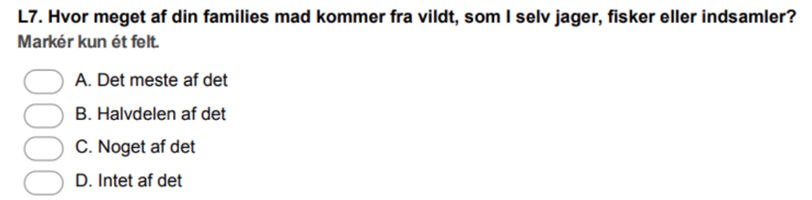

getwd()
df <- readRDS("GL_perspektiver.rds")Aflevering 2: forslag til besvarelse
Følgende er et forslag til besvarelse af den anden ud af de seks obligatoriske afleveringer i faget. Brug det til at sammenligne med dine egne svar og diskutér med dine medstuderende.
Opret et script og åben data
Start med at åbne R-Studio ved at klikke på dit R-project. Opret dernæst et nyt script og gem det i samme mappe, som dit R-project. Du kan f.eks. kalde scriptet Aflevering_2.
Brug
getwd()til at sikre dig, at du arbejder i den rigtige mappe på computerenIndlæs datasættet GL_perspektiver.rds som et objekt i dit script
Brug funktionen
names()til at se, hvilke variable datasættet indeholder
names(df) [1] "e2" "e3agreenlandic"
[3] "e3bdanish" "e3cenglish"
[5] "e3dother" "e4"
[7] "e5" "j16municipality"
[9] "j16greenland_government" "j16denmark_governmet"
[11] "j16greenlandicmedia" "j16danishmedia"
[13] "j16greenlandicjudicialsystem" "l7foodhunt"
[15] "l7afoodhunt" "l7bfoodhunt"
[17] "l7cfoodhunt" "l7dfoodhunt"
[19] "l8foodshr" "l10church"
[21] "l11indbelfs" "l12income"
[23] "l13" "l15family"
[25] "l15friends" "l15bank"
[27] "l16educlev" "l19health" 1 Populationer og stikprøver
Forestil dig, at du har fået til opgave at gennemføre en spørgeskemaundersøgelse om indkomstfordelingen blandt mennesker i alderen 18-65 år i Grønland.
a) Definér populationen for undersøgelsen
En population defineres som den mængde af enheder, som vi gerne vil udtale os om. I dette tilfælde vil vi gerne udtale os om indkomst blandt mennesker i alderen 18-65 i Grønland. Derfor er populationen i dette tilfælde ikke hele den Grønlandske population, men kun dem i alderen 18-65 år. Det er nemlig dem, som vi gerne vil udtale os om. Vi kan skelne mellem universet (target population) som er hele denne gruppe, og så frame population, som er den del af universet, som vi faktisk kan udtrække til stikprøven. I dette tilfælde kan vi f.eks. definere vores frame population som værende alle borgere i alderen 18-65, der er bosidende i Grønland og dermed kan kontaktes via. et udtræk fra CPR-registeret.
b) Hvordan ville du udvælge stikprøven til denne undersøgelse?
Som udgangspunkt vil man foretrække simpel tilfældigt udtræk, der giver alle populationen enheder (her borgere) lige stor sandsynlighed for at blive udtrukket. Dermed vil stikprøven nemlig statistisk set blive repræsentativ for populationen, hvis den er stor nok. Dog kan man være bekymret for at få for få respondenter fra specifikke grupper, f.eks. mindre befolkede områder. Derfor kan man benytte stratificeret udvælgelse og trække tilfældigt indenfor definerede strata (f.eks. større byer og mindre områder). Det er ikke helt dumt i Grønland, hvis man gerne vil sikre, at de mindre områder er repræsenteret med en hvis størrelse i stikprøven.
c) Hvad er problemet med en skæv stikprøve og hvilken betydning vil det have for din undersøgelse hvis din stikprøve bliver skæv?
En skæv stikprøve er en stikprøve, der ikke er repræsentativ for den population, den er trukket fra. Måske er der ikke blevet trukket tilfældigt, måske har der været (systematisk) bortfald, eller måske har man bare været uheldig. Konsekvensen er, at man ikke kan generalisere sine fund tilbage til populationen. Det er derfor altid en god idé at analysere på repræsentativiteten for ens stikprøve på udvalgte kernevariable (f.eks. op mod populationsdata fra Grønlands Statistik). Det kan give overblik over, om ens stikprøve er over-/underrepræsenteret på vigtige parametre. Dette bruger vi f.eks. t-testen og \(\chi^2\) testen til.
2 Stikprøver og statistisk usikkerhed
a) Forklar med udgangspunkt i store tals lov, hvad sammenhængen er mellem størrelsen på en stikprøve og den statistiske sikkerhed?
Store tals lov fortæller os, at når stikprøvestørrelsen (\(n\) ) bliver stor, vil gennemsnittet i stikprøven nærme sig populationens sande gennemsnit, (\(\mu\)):
\[ \frac{1}{n} \sum_{i=1}^{n} X_i \rightarrow \mu \quad \text{når } n \to \infty \] hvor ( \(X_i\) ) er en tilfældig variabel i stikprøven, og (\(\mu\)) er populationsgennemsnittet. Den giver os en garanti for, at stikprøvegennemsnittet kommer tættere på populationsgennemsnittet, efterhånden som stikprøven bliver større! Vi kan altså mindre usikkerheden på vores resultater ved at øge stikprøvestørrelsen.
b) Forklar med udgangspunkt i den centrale grænseværdisætning, hvorfor vi kan bruge normalfordelingen til at regne på den statistiske usikkerhed for et stikprøvegennemsnit, selvom den oprindelige variabel ikke var normalfordelt.
Den centrale grænseværdisætning fortæller os, at uanset hvilken fordeling hver observation fra en simpel tilfældig stikprøve følger, så er stikprøvegennemsnittet approksimativt (”så godt som”) normalfordelt, når bare stikprøven er tilstrækkelig stor. Normalfordelte variable/estimatorer er skruet sådan sammen, at vi ud fra standardafvigelsen på en variabel kan sige, hvor stor en andel af observationerne der ligger inden for et given afstand til gennemsnittet. Derfor bruger vi i praksis standardafvigelsen fra en standardnormalfordeling til at fastlægge et acceptabelt niveau af usikkerhed, og estimere usikkerheden på sine stikprøveberegninger (typisk \(sd=1,96 = 95\%\)).
3 Konfidensintervaller
Surveyen Grønlandske perspektiver indeholder følgende spørgsmål om fangst:

Den dikotome variabel l7afoodhunt måler, hvor mange respondenter, der har svaret ”A. Det meste af det”.
a) Brug funktionen t.test() i R til at beregne andelen (gennemsnittet) og et 95% konfidensinterval for andelen, der har svaret ”A. Det meste af det”.
Outputtet nedenfor viser, at ca. 21 % har svaret, at det meste af deres families mad kommer fra vildt, som de selv jager, fisker eller indsamler.
t.test(df$l7afoodhunt)
One Sample t-test
data: df$l7afoodhunt
t = 12.709, df = 612, p-value < 2.2e-16
alternative hypothesis: true mean is not equal to 0
95 percent confidence interval:
0.1765430 0.2410753
sample estimates:
mean of x
0.2088091 b) Forklar hvilken information konfidensintervallet giver
Konfidensintervallet er et udtryk for usikkerheden på dette estimat. Det giver os et interval, hvor den sande andel fra populationen sandsynligvis ligger (her med 95 % sandsynlighed). Helt præcist fortæller det os, at hvis undersøgelsen gennemføres flere gange (vi trækker flere stikprøver fra den samme population) og vi hver gang beregner tilsvarende 95% konfidensintervaller for gennemsnittet, så forventer vi, at 95% af disse konfidensintervaller vil indeholde den sande andel (fra populationen).
4 T-test for univariat analyse
Ifølge Wikipedia mestrer ca. 85 % af befolkningen i Grønland det grønlandske sprog. Du skal nu bruge en t-test til at teste, om andelen af respondenterne i surveyen er signifkant forskellig fra denne forventede værdi.
a) Opstil nul-hypotese og alternativ hypotese for en t-test, der tester om andelen i surveyen der taler grønlandsk (observeret andel) er signifikant forskellig fra den forventede andel (85%)
H0: Andelen istikprøven er den samme som andelen i populationen, dvs. 85%
H1: Andelen i stikprøven er ikke den samme som andelen i populationen
b) Gennemfør en t-test mod den forventede værdi i R. Du skal bruge variablen e3agreenlandic.
ttest_resultat <- t.test(df$e3agreenlandic, mu=0.85)
resultat_df <- data.frame(
Parameter = c("Gennemsnit", # Gennemsnittet af prøven
"Test-statistik", # Teststatistikken (t-værdien)
"P-værdi", # P-værdien med 4 decimaler
"Nedre konfidensinterval", # Nedre konfidensinterval for konfidensintervallet
"Øvre konfidensinterval", # Øvre konfidensinterval for konfidensintervallet
"Frihedsgrader"), # Frihedsgrader (df)
Værdi = c(
round(ttest_resultat$estimate, 3), # Gennemsnittet afrundet til 3 decimaler
round(ttest_resultat$statistic, 3), # Teststatistikken afrundet til 3 decimaler
sprintf("%.3f", ttest_resultat$p.value), # P-værdi med 3 decimaler
round(ttest_resultat$conf.int[1], 3), # Nedre konfidensinterval afrundet til 3 decimaler
round(ttest_resultat$conf.int[2], 3), # Øvre konfidensinterval afrundet til 3 decimaler
round(ttest_resultat$parameter, 1) # Frihedsgrader afrundet til 1 decimal
)
)
# Udskriv tabellen i konsollen
print(resultat_df) Parameter Værdi
1 Gennemsnit 0.919
2 Test-statistik 6.446
3 P-værdi 0.000
4 Nedre konfidensinterval 0.898
5 Øvre konfidensinterval 0.94
6 Frihedsgrader 643c) Konkludér på testen – er der signifikant forskel på andelen i surveyen der taler grønlandsk og den forventede andel? Forklar hvordan du konkluderer som du gør.
Outputtet herunder viser, at andelen i stikprøven er \(0,92=92\%\). I vores test af, om denne værdi er signifikant forskellig fra den forventede andel \(85\%\) får vi en p-værdi på \(0,000\). Da det er under vores kritiske grænse på \(0,05\) forkaster/afviser vi nulhypotesen(H0) og konkluderer, at der er signifikant forskel på den forventende andel af folk, der taler grønlandsk og den andel, vi har i vores stikprøve. Hvis 85 % var et rigtig tal fra Grønlands statistik (det er jo kun fra Wikipedia), så ville der altså være grund til at tænke over, hvad dethar af konsekvenser for stikprøvens repræsentativitet, at grønlandsktalene er overrepræsenterede i vores stikprøve.
5 Chi2 test (goodness of fit test) for univariat analyse
Variablen j16greenlandicjudicialsystem måler, i hvor høj grad respondenternes stoler på det grønlandske retssystem på en skala fra 1 (overhovedet ikke) til 5 (i høj grad).
a) Definér den forventede fordeling på variablen: hvor mange procent forventer du har svaret hhv. 1 (overhovedet ikke), 2, 3, 4, 5 (i høj grad)?
Herunder definerer jeg, at jeg tror, at der er lige mange i hver kategori, dvs. 20 %:
forventet_andele <- c(0.2, 0.2, 0.2, 0.2, 0.2) # Din forventede fordelingDu skal nu bruge en chi2-test til at teste, hvor fordelingen i surveyen er signifikant forskellig fra din forventede fordeling
b) Opstil nul-hypotese og alternativ hypotese for en chi2-test (goodness of fit test) der tester, om fordelingen i surveyen er signifikant forskellig fra din forventede fordeling på spørgsmålet om retssystemet (j16greenlandicjudicialsystem).
H0: Den observerede fordeling er ikke signifikant forskellig fra den forventede fordeling
H1: Den observerede fordeling er signifikant forskellig fra den forventede fordeling.
c) Gennemfør testen (følg fremgangsmåden i kodebogen)
Først laves en frekvenstabel for at se, hvor mange vi har observeret i hver kategori. Antallet i hver kategori gemmes som en liste i et objekt som den observerede fordeling:
library(janitor)
tabyl(df$j16greenlandicjudicialsystem) df$j16greenlandicjudicialsystem n percent valid_percent
1 33 0.05124224 0.06285714
2 73 0.11335404 0.13904762
3 183 0.28416149 0.34857143
4 149 0.23136646 0.28380952
5 87 0.13509317 0.16571429
NA 119 0.18478261 NAobserveret <- c(33, 72, 183, 148, 86)Herefter er vi klar til at sammenligne den observerede fordeling med den forventede fordeling med chi-testen:
chi_test <- chisq.test(x = observeret, p = forventet_andele)
# Formatér test-resultater og gem som tabel
(chi_tabel <- data.frame(
Parameter = c("Chi-squared", "Frihedsgrader", "p-værdi"),
Værdi = c(formatC(chi_test$statistic, format = "f", digits = 3), # Chi-squared værdi
chi_test$parameter, # Frihedsgrader
formatC(chi_test$p.value, format = "f", digits = 3)) # p-værdi
)) Parameter Værdi
X-squared Chi-squared 139.513
df Frihedsgrader 4
p-værdi 0.000d) Konkludér på testen – kan du afvise nulhypotesen? Er fordelingen i surveyen signifikant forskellig fra din forventede fordeling?
Testen returnerer en p-værdi på \(p-værdi=0,000\). Dette er altså under vores kritiske grænse på \(0,05\) og vi kan derfor forkaste nulhypotesen og går med alternativhypotesen. Vi konkluderer derfor, at der er en signifikant forskel på den observerede og forventede fordeling på variablen.